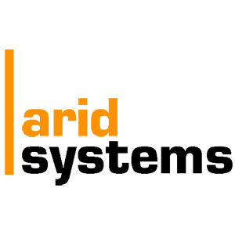

UTS Data Science Institute has been working in the last years on building the Sydney Real-Time Digital Twin Platform, integrating at once several types of data sources such as all the city 3D layout with top layers like the public transport movement in real-time, transport simulation for incident scenario management in real-time, water pipes layout via IoT sensing data transmission and air quality real-time transmission from monitoring stations in Sydney.
The digital twin brings together a diverse set of data sources in real-time including public transport movement, transport simulation for incident scenario management, water metered data, energy consumption and air pollution. It enables the Future Mobility Lab to address some burning real world problems such as traffic congestion, smart city livability, incident impact analysis, transitioning towards new emerging transport (electric vehicles), parking availability around sensitive areas, and pollution hotspot identification.
A digital twin operating in real-time requires continuous visibility of what’s happening in the real world. Access by a digital twin to a diverse array of real world event, as those events occur, is a major challenge. UTS is collaborating with Arid Systems Pty Ltd to explore the use of real-time streamed transportation-related information in its digital twin platform.TIFT, The Internetwork for Things from Arid Systems aggregates and manages streams of real-time information for digital twins … and many other Internet of Things connected applications. The digital twin connects to TIFT and receives continuous streams of event data in real time. This work offers many current and future benefits, improving or understanding of complex real world environments.
http://digital-twin.datasci.institute
Developed by Dr Yuming Ou, Dr Merlin Zhang, Dr Tuo Mao, and Dr Adriana-Simona Mihaita.
This project has been selected as the finalist of the IoT Awards 2021 in Smart Cities category, and the finalist of the ITS Australia Awards 2021 in Excellence in Transport Data category.